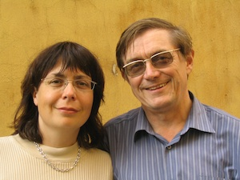

References

“I always greatly enjoy Victoria Smus’ performances. She is not only a musician with impeccable taste, but also a pianist possessing a hugely varied musical palette, able to perform the most challenging technical pieces with ease.
Regardless of whether Victoria plays Mozart, Schubert, Chopin, Schumann or Prokofiev, she always establishes a strong heartfelt connection with the audience. Victoria has a way of inviting the listener to share and enjoy world-class musical masterpieces. Victoria possesses unique talent and exceptional charisma which makes each of her performances a concert to remember.” — Oleg Malov, Professor of the St. Petersburg Conservatory, Russia, Honoured artist of Russia.
“On Feb. 8, 2009 I had the great pleasure of attending an all-Chopin Concert given by Victoria Smus. Her performances of his Ballades, Mazurkas and Nocturnes were superb – rich, compelling and to my ears a heart-felt feast of music by my favourite composer. Bravo Victoria!” — Linda Niamath, Canadian Pianist/Teacher/Composer
“The moment I began taking lessons with Mrs. Smus I knew I made the right choice. Not only did she help me advance in my piano skills and techniques, her music knowledge and experiences has always left me inspired and motivated to do better lessons after lessons. Through her guidance, I was able to achieve many awards and gain so much experience from recitals, performances, music festivals, and competitions; something that I’ve never dream I could achieve on my own.
Mrs. Smus really cares for all her students from a personal level. She is honest, kind, and of course, she sees your potential. She dares to push you to your limit but always in a supportive and encouraging way. I have completed 2 music performers’ diplomas and won many music awards with the help of Mrs. Smus. With her encouragement, I have also become a piano instructor as my professional career, helping people to be inspired the way Mrs. Smus inspired me. She has indeed changed me from a piano player to a performer.” — Grace Ng, ARCT, LLCM, BA (psychology), piano teacher of 22 students, RMTA
“I was a student of Victoria’s for about 12 years, and with her support and expertise finished my studies with her with a diploma from the London College of Music. Having known Victoria since I was a child, she has instilled in me the value of hard work, and the strength to never give up. She also taught me how self-discipline and self-motivation are the keys to achieving my goals. These priceless lessons I not only used in reaching my musical goals, but they will also allow me to achieve any other goals I set in my life. Thank you Victoria for everything you have given me.” — Suzanne Cassinos, Registered Nurse on the Oncology ward at BC Children’s Hospital